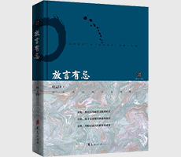

放言有忌

| 作者: 虞云国 | 开本: 大32开 |
| 出版社: 华夏出版社 | 纸张: 胶版纸 |
| 出版时间: 2014-07 | 页数: 229页 |
| 版次: 1 | 字数: 167千字 |
| ISBN: 9787508081519 | 定价: 38.00 |
| 分类: 历史 | 装帧: 精装 |
内容简介:
《放言有忌》分为三辑：读史，回溯中国和世界的重大政治、文化事件，多维度看待历史事件，评点古今历史政治文化的得失；读书，遍寻中外名家、经典，汲取智识，从书中探寻走出现实困惑的蹊径；读世，既有对“盛世修典”等热门事件的述评，又有对故人的追忆，冷眼记录亲历世事的感悟。
作者简介:
虞云国，浙江慈溪人，1948年生于上海。知名文史学者。上海师范大学教授，博士生导师，中国宋史研究会理事，中国范仲淹研究会理事，主要从事宋代历史与文献的研究。撰有《宋代台谏制度研究》《细说宋朝》《宋光宗宋宁宗》等专著，主编《宋代文化大辞典》《中国文化史年表》，整理标校《文献通考四裔考》、《宣和奉使高丽图经》《菿汉三言》等古籍十余种。论文有《论宋代第二次削兵权》《史坛南北二陈论》等数十篇，多编入《两宋历史文化丛稿》《学史帚稿》。文史随笔结集有《敬畏历史》《水浒乱弹》《书砦梁山泊》《宫花寂寞紅》等。
Copyright © 2018-2020 徐悦佳. All rights reserved.